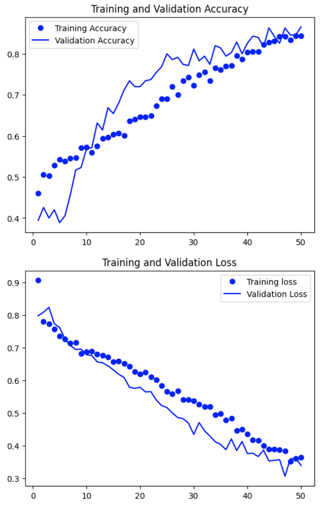
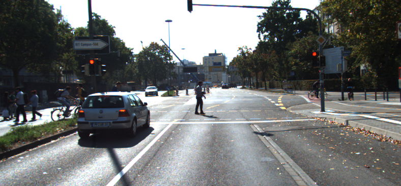

At a glance, Point Pillars relies on data from LiDaR (Light Detection and Ranging) which they group into pillars instead of voxels allowing them to encode said pillars into a 2D birds eye view pseudo-image of the surroundings.

There are more nuances of Point Pillars which we won't get into but its still important that its understood at least at a very basic level how it operates. More information can be found on the Github which can be accessed by clicking the subheader.
This is the point at which we decided to add our contribution by implementing a new classification category for emergency vehicles, something not considered by the Point Pillars project. The emergency vehicles include ambulances, fire trucks, and police cars.
Our first step is simply to work in conjunction with Point Pillars and thus we are looking to initially identify these vehicles and distinguish them from other regular automobiles. To identify emergency vehicles we started with an existing code base we had found on Kaggle which used a model with the Keras and EfficientNet libraries.


The above are our initial results from running the model. The model is clearly overfitting with the training accuracy significantly higher than the validation accuracy and the training loss lower than the validation loss. Thus we made some adjustments to account for these faults in the original model.
These are our improved results with the updated model. The model is much more sophisticated with the issue of overfitting being fixed, as evident by the overlap of the validation and training accuracy curves. Using techniques such as dropout, data augmentation, and image manipulation, we were able to achieve much better results. There is some fine tuning we can do to make the model even better by implementing more regularization techniques such as batch normalization, however we are focusing more on the final step of this project: integrating this model with Point Pillars.
For the final piece of our project we are going to integrate Point Pillars network with the our EVC model. We first have to be able to isolate and extract the images of the cars from the data we get through the cameras implemented in the car used by Point Pillars.
We then can feed these scaled down images to the EVC model which then gives us a binary output of whether the vehicle is regular or an emergency automobile. And the final step would be to send this output back to the Point Pillars network which will appropriately label said vehicle.
The future for our project is initially to be able to wrap up all these technical aspects: improving the EVC model and having a seamless integration between the model and Point Pillars. Following which we could look to add more technology such as looking into how a sound sensor could give insight into the siren of the vehicle which again could lead to another level of classification of active emergency vehicles. Other than that however, we plan on writing a paper for this project which will be released soon.
Farhan Khan, Max Titov, Tanush Siotia, Xin Sun
With special thanks to Professor Geoffrey Fox and Md Kairul Islam whom helped us throughout the project